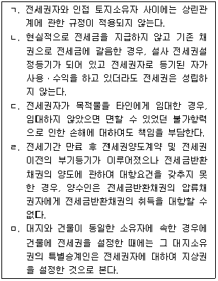
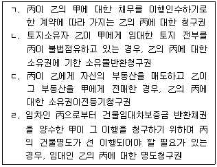

변리사-1차(2교시) (2015-02-14 기출문제)
1. 법률행위의 대리에 관한 설명으로 옳지 않은 것은？
- 甲의 대리인 乙이 대리행위를 하면서 甲을 위한 것임을 표시하지 않은 경우, 乙은 착오를 이유로 의사표시를 취소할 수 있다.
- 甲이 乙에게 재산관리에 관한 대리권을 수여하였지만 그 대리권의 범위가 명확하지 않은 경우, 乙은 甲의 주택을 수선하기 위한 공사계약을 체결할 수는 있지만, 甲의 예금을 주식으로 전환할 수는 없다.
- 乙이 甲으로부터 예금인출의 대리권을 부여받았는데, 乙의 甲에 대한 금전채권의 기한이 도래한 경우, 乙은 甲의 예금을 인출하여 자신의 채권변제에 충당할 수 있다.
- 甲이 乙을 대리인으로 선임한 경우, 乙은 甲의 승낙이 없더라도 부득이한 사유가 있는 때에는 복대리인을 선임할 수 있다.
- 甲이 乙을 대리인으로 선임하였는데 乙이 파산선고를 받을 경우, 乙의 대리권은 소멸한다.
(정답률: 알수없음)

2. 乙은 甲의 X건물에 대하여 甲의 대리인으로서 丙과 매매계약을 체결하였는데, 乙에게는 대리권이 없었다. 이에 관한 설명으로 옳지 않은 것은? (다툼이 있으면 판례에 따름)
- 丙이 甲의 요구에 따라 매매대금 전부를 지급한 경우, 특별한 사정이 없는 한 丙은 甲에게 X건물의 소유권이전등기를 청구할 수 있다.
- 甲이 乙의 대리행위에 대하여 乙에게 추인의 의사표시를 한 경우, 甲은 이러한 사실을 알지 못한 丙에게 그 추인의 효력을 주장하지 못한다.
- 乙과 丙사이에 매매계약이 체결된 후, 甲이 X건물을 丁에게 매도하고 소유권 이전등기를 해 준 경우, 甲이 乙의 대리행위를 추인하더라도 丁은 유효하게 소유권을 취득한다.
- 丙이 상당한 기간을 정하여 甲에게 추인여부의 확답을 최고하였음에도 甲이 그 기간 내에 확답을 발하지 않은 경우, 甲은 추인을 거절한 것으로 본다.
- 丙은 乙과의 매매계약 체결 당시에 乙에게 대리권 없음을 안 경우에도 甲의 추인이 있을 때까지 乙에 대하여 매매계약을 철회할 수 있다.
(정답률: 알수없음)
3. 미성년자의 법률행위에 관한 설명으로 옳지 않은 것은？ (다툼이 있으면 판례에 따름)
- 법정대리인의 동의 없이 신용구매계약을 체결한 미성년자가 그 동의 없음을 이유로 계약을 취소하는 것은 신의칙에 반한다.
- 미성년자가 법정대리인으로부터 허락을 얻은 특정한 영업에 관하여는 성년자와 동일한 행위능력을 갖는다.
- 미성년자가 법정대리인으로부터 재산처분의 허락을 받았지만 그 재산을 처분하기 전이라면, 법정대리인은 그 허락을 취소할 수 있다.
- 법정대리인의 동의가 있었다는 점에 대한 증명책임은 그 법률행위의 유효를 주장하는 자에게 있다.
- 법정대리인은 미성년자에게 한 특정한 영업의 허락을 제한할 수 있으나, 이러한 제한을 가지고 미성년자와 거래한 선의의 상대방에게 대항할 수 없다.
(정답률: 알수없음)
4. 제척기간에 관한 설명으로 옳은 것은? (다툼이 있으면 판례에 따름)
- 점유를 침탈당한 자의 침탈자에 대한 점유물회수청구권의 행사기간 1년은 제척기간이다.
- 법률행위의 취소권은 추인할 수 있는 날로부터 3년 내에 재판상으로 행사를 하여야 한다.
- 제척기간 내에 권리자의 권리주장 또는 의무자의 승인이 있으면 제척기간은 중단된다.
- 제척기간의 경우 그 기간이 경과하면 그 기산일에 소급하여 권리소멸의 효력이 생긴다.
- 하자담보책임에 기한 매수인의 손해배상청구권에는 민법 제582조의 제척기간 규정으로 인하여 소멸시효 규정이 적용되지 않는다.
(정답률: 알수없음)
5. 법률행위의 부관에 관한 설명으로 옳지 않은 것은? (다툼이 있으면 판례에 따름)
- 정지조건부 화해계약 당시 이미 그 조건이 성취되었다면, 이는 조건이 없는 화해계약이다.
- 정지조건부 채권양도에서 정지조건이 성취되었다는 사실은 채권양도의 효력을 주장하는 자에게 그 증명책임이 있다.
- 조건의 성취로 이익을 받게 되는 당사자가 신의성실에 반하여 조건을 성취시킨 경우, 상대방은 그 조건의 불성취를 주장할 수 있다.
- 기한의 이익은 상대방의 이익을 해하지 않는 한 포기할 수 있으므로, 그 포기의 효과는 소급효를 갖는다.
- 채무자가 담보제공의 의무를 이행하지 않는 경우, 기한의 이익을 주장할 수 없다.
(정답률: 알수없음)
6. 피성년후견인에 관한 설명으로 옳은 것은？
- 질병, 장애, 노령, 그 밖의 사유로 인한 정신적 제약으로 사무를 처리할 능력이 지속적으로 결여된 자를 피성년후견인이라 한다.
- 가정법원은 취소할 수 없는 피성년후견인의 법률행위의 범위를 정한 경우에도 본인의 청구에 의해 그 범위를 변경할 수 있다.
- 피성년후견인이 성년후견인의 동의를 얻어 재산상의 법률행위를 한 경우, 성년후견인은 이를 취소할 수 없다.
- 가정법원이 한정후견개시의 심판을 할 때에는 성년후견개시의 심판을 할 때와 달리 본인의 의사를 고려하지 않는다.
- 가정법원이 피한정후견인에 대하여 성년후견개시의 심판을 할 때에는 종전의 한정후견의 종료 심판을 할 필요가 없다.
(정답률: 알수없음)
7. 실종선고에 관한 설명으로 옳지 않은 것은? (다툼이 있으면 판례에 따름)
- 실종선고를 받은 자가 생존하여 새로운 주소에서 체결한 부동산 매매계약은 실종선고가 취소되지 않았더라도 유효하다.
- 가정법원은 실종선고를 취소하기 위해서는 6개월 이상 공고를 하여야 한다.
- 2013년 4월 16일 제주도행 여객선이 침몰하여 행방불명된 甲에 대하여 2015년 2월 11일 실종선고가 내려진 경우, 甲은 2014년 4월 16일 24시에 사망한 것으로 간주된다.
- 해녀인 甲이 해산물을 채취하다가 행방불명되었다면, 이는 특별실종선고를 위한 '사망의 원인이 될 위난'이라고 할 수 없다.
- 실종선고가 취소된 경우, 실종선고를 직접원인으로 하여 재산을 취득한 자가 선의인 경우에는 그 받은 이익이 현존하는 한도에서 반환할 의무가 있다.
(정답률: 알수없음)
8. 물건에 관한 설명으로 옳지 않은 것은？ (다툼이 있으면 판례에 따름)
- 사람의 유체ㆍ유골은 매장ㆍ관리ㆍ제사ㆍ공양의 대상이 될 수 있는 유체물에 해당한다.
- 관공서의 건물과 같이 국가나 공공단체의 소유로서 공적 목적에 사용되는 공용물은 불융통물의 일종이다.
- 1필의 토지 일부는 분필을 하지 않는 한 그 일부의 토지 위에 용익물권을 설정할 수 없다.
- 「입목에 관한 법률」에 의하여 소유권보존등기를 한 수목의 집단 위에 저당권을 설정할 수 있다.
- 어느 건물이 주된 건물의 종물이기 위해서는 주된 건물의 경제적 효용을 보조하기 위하여 계속적으로 이바지하는 관계가 있어야 한다.
(정답률: 알수없음)
9. 착오에 의한 의사표시에 관한 설명으로 옳지 않은 것은? (다툼이 있으면 판례에 따름)
- 대리인의 표시 내용과 본인의 의사가 다른 경우, 본인은 착오를 이유로 의사표시를 취소할 수 없다.
- 착오를 이유로 의사표시를 취소하면 그 법률행위는 소급하여 무효로 된다.
- 착오의 존재여부는 의사표시 당시를 기준으로 판단하므로, 장래의 불확실한 사실은 착오의 대상이 되지 않는다.
- 시(市)의 개발사업을 위한 토지매수협의를 진행하면서 토지 전부가 대상에 편입된다는 시 공무원의 말을 믿고 매매계약을 체결한 경우, 동기의 착오를 이유로 의사표시를 취소할 수 있다.
- 부동산매매에서 목적물의 시가에 관한 착오는 법률행위의 중요부분에 관한 착오에 해당하지 않는다.
(정답률: 알수없음)
10. 법률행위의 무효와 취소에 관한 설명으로 옳은 것은? (다툼이 있으면 판례에 따름)
- 토지거래허가구역 내의 토지매매계약은 처음부터 그 허가를 배제하는 내용이더라도 유동적 무효이다.
- 토지거래허가구역 내의 토지매매계약의 당사자는 상대방의 허가신청 협력의무 불이행을 이유로 거래계약 그 자체를 해제할 수 있다.
- 무효인 법률행위의 당사자가 그 무효임을 알면서 추인한 경우에는 소급하여 유효한 법률행위로 된다.
- 법률행위의 취소를 전제로 한 소송상의 이행청구나 이를 전제로 한 이행거절에는 취소의 의사표시가 포함되어 있다고 볼 수 있다.
- 법정대리인의 동의 없이 매매계약을 체결한 미성년자는 성년이 되지 않았더라도 단독으로 그 계약을 추인할 수 있다.
(정답률: 알수없음)
11. 소멸시효에 관한 설명으로 옳지 않은 것은?
- 주된 권리의 소멸시효가 완성한 때에는 종속된 권리에 그 효력이 미친다.
- 파산절차참가는 채권자가 이를 취소하거나 그 청구가 각하된 때에는 시효중단의 효력이 없다.
- 변리사에 대하여 직무상 보관한 서류의 반환을 청구하는 채권은 3년간 행사하지 않으면 소멸시효가 완성한다.
- 부부 중 한쪽이 다른 쪽에 대하여 가지는 권리는 혼인관계가 종료된 때부터 6개월 내에는 소멸시효가 완성되지 않는다.
- 천재 기타 사변으로 인하여 소멸시효를 중단할 수 없을 때에는 그 사유가 종료한 때로부터 6개월 내에는 시효가 완성하지 않는다.
(정답률: 알수없음)
12. 민법상 법인의 기관에 관한 설명으로 옳은 것은？
- 감사는 재단법인에서는 필요기관이지만 사단법인에서는 임의기관이다.
- 정관으로 정한 이사의 수가 여럿인 경우, 특별한 사정이 없는 한 공동으로 법인을 대표한다.
- 이사의 성명과 주소는 등기사항이지만, 그 변경등기가 경료되기 전이라도 신임이사가 한 직무행위는 법인에 대하여 유효하다.
- 법인과 이사의 이익이 상반되는 경우, 법원은 이해관계인이나 검사의 청구에 의하여 임시이사를 선임하여야 한다.
- 정관에 달리 정함이 없으면 총사원 10분의 1이 회의의 목적사항을 제시하여 청구한 경우, 이사는 임시총회를 소집하여야 한다.
(정답률: 알수없음)
13. 등기 없이 물권변동이 일어나는 경우가 아닌 것은? (다툼이 있으면 판례에 따름)
- 단독건물을 완공하였으나 소유권보존등기를 하지 않은 경우
- 부동산 소유자가 사망하여 그 부동산이 상속된 경우
- 민사집행법에 의한 경매에서 부동산을 매수하고 매각대금을 완납한 경우
- 채무의 담보로 자신의 토지에 저당권을 설정해 준 채무자가 그 채무를 모두 변제한 경우
- 잔금을 지급한 부동산 매수인이 매도인을 상대로 매매를 원인으로 한 소유권 이전등기청구소송을 제기하여 승소의 확정판결을 받은 경우
(정답률: 알수없음)
14. 乙은 甲으로부터 X토지를 매수하고 중도금까지 지급한 후 소유권이전등기 청구권을 보전하기 위하여 가등기를 하였다. 그 후 甲은 X토지를 丙에게 매도하고 소유권이전등기를 해 주었다. 乙이 잔금을 제공하면서 이전등기를 요구했으나 甲이 응하지 않고 있다. 이에 관한 설명으로 옳지 않은 것은? (다툼이 있으면 판례에 따름)
- 乙은 가등기만으로 丙명의의 소유권이전등기의 말소를 구할 수 없다.
- 乙의 본등기청구권은 甲을 상대로 하여 행사하여야 한다.
- 乙의 가등기에 기하여 본등기가 이루어진 경우, 丙은 乙에 대해 소유권을 주장할 수 없다.
- 乙의 가등기에 기하여 본등기가 이루어진 경우, 乙은 가등기를 한 때로부터 소유권을 취득한 것으로 본다.
- 乙의 가등기에 기하여 본등기가 이루어진 경우, 丙명의의 소유권이전등기는 등기관에 의해 직권말소된다.
(정답률: 알수없음)
15. 점유자와 회복자의 관계에 관한 설명으로 옳지 않은 것은? (다툼이 있으면 판례에 따름)
- 선의의 점유자는 과실을 취득한 경우에도 점유물을 보존하기 위하여 지출한 통상의 필요비를 상환할 것을 청구할 수 있다.
- 과실수취권이 인정되는 선의의 점유자란 과실수취권을 포함하는 권원이 있다고 오신한 점유자를 말하고, 그와 같은 오신을 함에는 오신할 만한 정당한 근거가 있어야 한다.
- 권원 없이 타인 소유 토지의 상공에 송전선을 설치하여 그 토지를 사용ㆍ수익한 악의의 점유자는 받은 이익에 이자를 붙여 반환하여야 하며, 이자의 이행지체로 인한 지연손해금도 지급하여야 한다.
- 악의의 점유자는 수취한 과실을 반환하여야 하며 소비하였거나 과실로 인하여 훼손 또는 수취하지 못한 경우에는 그 과실의 대가를 보상하여야 한다.
- 점유자가 물건에 유익비를 지출할 당시 계약관계 등 적법한 점유의 권원을 가지고 있었다면, 계약관계 등의 상대방이 아닌 점유회복 당시의 소유자에 대하여 점유자와 회복자의 관계에 따른 유익비의 상환을 청구할 수 없다.
(정답률: 알수없음)
16. 공유에 관한 설명으로 옳지 않은 것은? (다툼이 있으면 판례에 따름)
- 공유자는 다른 공유자가 분할로 인하여 취득한 물건에 대하여 그 지분의 비율로 매도인과 동일한 담보책임이 있다.
- 공유자가 그 지분을 포기하거나 상속인 없이 사망한 때에는 법률에 다른 규정이 없으면 그 지분은 다른 공유자에게 각 지분의 비율로 귀속한다.
- 공유물 분할협의가 성립한 후에 공유자 일부가 분할에 따른 이전등기에 협력하지 않으면, 재판상 분할을 청구할 수 있다.
- 토지의 1/2 지분권자가 나머지 1/2 지분권자와 협의 없이 토지를 배타적으로 독점 사용하는 경우, 나머지 지분권자가 공유물의 보존행위로서 그 배타적 사용의 배제를 청구할 수 있다.
- 공유자는 법률에 다른 규정이 없으면 5년 내의 기간으로 공유물분할금지 약정을 할 수 있고, 갱신한 때에는 그 기간은 갱신일로부터 5년을 넘지 못한다.
(정답률: 알수없음)
17. 甲소유의 X토지를 乙이 소유의 의사로 평온ㆍ공연하게 점유하고 있다. 이에 관한 설명으로 옳지 않은 것은? (다툼이 있으면 판례에 따름)
- 乙의 취득시효가 완성된 경우, 甲은 乙에 대하여 X토지에 대한 불법점유임을 이유로 X토지의 인도를 청구할 수 없다.
- 乙이 X토지를 시효취득했더라도, 乙이 시효취득 전에 X토지를 사용하여 얻은 이익은 甲에게 반환하여야 한다.
- 乙이 취득시효 완성 후 등기하기 전에 甲이 X토지를 丙에게 매도하여 소유권이전등기를 해 준 경우, 乙은 특별한 사정이 없는 한 丙에 대하여 시효취득을 이유로 등기말소를 청구할 수 없다.
- 乙이 취득시효 완성 후 등기하기 전에 甲이 X토지를 丙에게 매도하여 소유권이전등기를 해 준 경우, 乙은 시효기간의 기산점을 임의로 선택할 수 없다.
- 乙의 취득시효가 진행되는 중에 甲이 X토지를 丙에게 매도하여 소유권이전등기를 해 준 다음 시효가 완성된 경우, 乙은 丙에 대하여 시효취득 완성을 주장할 수 있다.
(정답률: 알수없음)
18. 지상권에 관한 설명으로 옳지 않은 것은? (다툼이 있으면 판례에 따름)
- 토지에 관하여 저당권을 취득함과 아울러 그 저당권이 실행될 때까지 목적 토지의 담보가치를 하락시키는 침해행위를 배제할 목적으로 지상권을 설정할 수 있다.
- 관습상의 법정지상권을 취득한 자가 대지소유자와 사이에 대지에 관하여 임대차계약을 체결한 경우, 특별한 사정이 없는 한 관습상의 법정지상권을 포기한 것으로 된다.
- 지상권이 존속기간의 만료로 소멸한 경우, 건물 기타 공작물이나 수목이 현존하는 때에는 지상권자는 계약의 갱신을 청구할 수 있다.
- 토지소유자가 지상권자의 지료연체를 이유로 지상권소멸청구를 하여 지상권이 소멸된 경우에도, 지상권자는 토지소유자를 상대로 현존하는 건물 기타 공작물이나 수목의 매수를 청구할 수 있다.
- 법정지상권에 관한 지료가 결정된 바 없다면, 법정지상권자가 2년 이상의 지료를 지급하지 아니하였더라도 토지소유자는 지료지급 연체를 이유로 지상권의 소멸을 청구할 수 없다.
(정답률: 알수없음)
19. 전세권에 관한 설명으로 옳은 것을 모두 고른 것은? (다툼이 있으면 판례에 따름)

- ㄱ, ㄴ
- ㄷ, ㄹ
- ㄷ, ㅁ
- ㄱ, ㄴ, ㅁ
- ㄷ, ㄹ, ㅁ
(정답률: 알수없음)
20. 甲은 자신의 X노트북을 乙에게 빌려주었는데, 乙은 丙에게 노트북 수리를 맡겼다. 丙이 수리를 마쳤지만 아직 수리대금을 받지 못하고 있다. 이에 관한 설명으로 옳지 않은 것은? (다툼이 있으면 판례에 따름)
- 丙의 乙에 대한 수리대금채권은 민법상 3년의 단기소멸시효에 걸린다.
- 乙과 丙이 유치권의 성립을 배제하는 특약을 하였다면, 그 특약은 유효하다.
- X노트북을 점유하고 있는 丙은 甲에 대하여 유치권을 주장할 수 있다.
- 丙이 乙에게 노트북을 반환하였다면, 丙은 수리대금채권에 관하여 甲에게 유치권을 주장할 수 없다.
- 甲과 乙사이에 수리비는 乙이 부담하기로 사전에 약정하였다면, X노트북을 점유하고 있는 丙은 甲에게 유치권을 주장할 수 없다.
(정답률: 알수없음)
21. 민법상 동산질권에 관한 설명으로 옳지 않은 것은?
- 질권은 다른 약정이 없는 한 원본, 이자, 위약금, 질권실행의 비용, 질물보존의 비용 및 채무불이행 또는 질물의 하자로 인한 손해배상의 채권을 담보한다.
- 질권자는 그 권리의 범위 내에서 자기의 책임으로 질물을 전질할 수 있으며, 이 경우에는 전질을 하지 아니하였으면 면할 수 있는 불가항력으로 인한 손해에 대해서도 책임을 부담한다.
- 책임전질의 경우에 질권자가 채무자에게 전질의 사실을 통지하거나 채무자가 이를 승낙하지 않으면 전질로써 채무자, 보증인, 질권설정자 및 그 승계인에게 대항하지 못한다.
- 질권자가 질물에 대해 우선변제권을 행사할 수 있으려면 채무자가 이행지체에 빠져야 한다.
- 질권자는 정당한 이유가 있는 때에는 미리 채무자 및 질권설정자에게 통지함이 없이 감정인의 평가에 의하여 질물로 직접 변제에 충당할 것을 법원에 청구할 수 있다.
(정답률: 알수없음)
22. 저당권의 효력이 미치는 범위 등에 관한 설명으로 옳지 않은 것은? (다툼이 있으면 판례에 따름)
- 저당권설정행위에서 저당권의 효력은 종물에 미치지 않는다고 약정한 경우, 이를 등기하여야 제3자에게 대항할 수 있다.
- 건물의 증축부분이 기존 건물에 부합하여 기존 건물과 분리하여서는 별개의 독립물로서 효용을 갖지 못하는 경우, 기존 건물에 대한 저당권은 부합된 증축부분에도 그 효력이 미친다.
- 지상권자가 축조하여 소유하고 있는 건물에는 토지저당권의 효력이 미치지 않는다.
- 저당부동산에 대한 압류가 있기 전에 저당권설정자가 그 부동산으로부터 수취한 과실에도 저당권의 효력이 미친다.
- 건물 소유를 목적으로 한 토지임차인이 그 토지 위에 소유하는 건물에 저당권을 설정한 때에는, 저당권의 효력이 건물뿐만 아니라 건물 소유를 목적으로 한 토지의 임차권에도 미친다.
(정답률: 알수없음)
23. 저당권의 처분에 관한 설명으로 옳지 않은 것은? (다툼이 있으면 판례에 따름)
- 저당권은 그 담보한 채권과 분리하여 타인에게 양도하거나 다른 채권의 담보로 하지 못한다.
- 피담보채권을 저당권과 함께 양수한 자는 저당권이전의 부기등기를 마치고 저당권 실행의 요건을 갖추고 있는 한, 채권양도의 대항요건을 갖추고 있지 않더라도 경매신청을 할 수 있다.
- 저당권의 양도에 있어서 물권적 합의는 저당권의 양도인과 양수인 사이뿐만 아니라 채무자 사이에까지 있어야 한다.
- 저당권부 채권을 양도하는 경우, 피담보채권 양도의 시기와 저당권이전등기의 시기가 반드시 일치할 필요는 없으므로, 일시적으로 피담보채권과 저당권의 귀속이 달라진다고 하여 저당권이 무효로 되는 것은 아니다.
- 저당권으로 담보한 채권을 질권의 목적으로 한 때에는 저당권등기에 질권의 부기등기를 하여야 그 효력이 저당권에 미친다.
(정답률: 알수없음)
24. 가등기담보 등에 관한 설명으로 옳지 않은 것은? (다툼이 있으면 판례에 따름)
- 채권자가 담보권을 실행하여 담보목적 부동산의 소유권을 취득하기 위해서는 그 채권의 변제기 후에 청산금의 평가액을 채무자 등에게 통지하고, 그 통지가 채무자 등에게 도달한 날부터 2개월이 지나야 한다.
- 담보권 실행의 통지시 담보목적 부동산의 평가액이 채권액에 미달하여 청산금이 없다고 인정되는 때에는 그 뜻을 통지하여야 한다.
- 채권자는 담보목적 부동산에 관하여 이미 소유권이전등기를 마친 경우에는 청산기간이 지난 후 청산금을 채무자 등에게 지급한 때에 담보목적 부동산의 소유권을 취득한다.
- 가등기담보권자인 채권자가 청산기간이 경과하기 전에 채무자에게 청산금을 지급한 경우, 후순위권리자에게 대항할 수 있다.
- 담보가등기를 마친 부동산에 대하여 강제경매 등이 행하여진 경우, 담보가등기권리는 그 부동산의 매각에 의하여 소멸한다.
(정답률: 알수없음)
25. 甲의 乙에 대한 금전채무에 대하여 丙이 乙과 보증계약을 체결하였다. 이에 관한 설명으로 옳은 것은? (다툼이 있으면 판례에 따름)
- 甲이 시효이익을 포기하면 丙은 보증채무의 소멸을 乙에게 주장할 수 없다.
- 甲과 乙사이에 금전채무에 관하여 위약금 약정이 없는 경우, 乙과 丙은 보증채무에 관하여 위약금을 정할 수는 없다.
- 甲이 乙에게 변제를 한 경우, 丙에게 사전에 통지하지 않으면 甲은 자기의 면책행위의 유효를 丙에게 주장할 수 없다.
- 丙이 甲의 의사에 반하여 乙과 보증계약을 체결하고 乙에게 보증채무를 이행한 경우, 丙은 甲의 현존이익의 한도에서 甲에 대하여 구상할 수 있다.
- 丙이 보증채무의 이행을 지체한 경우, 丙은 특별한 약정이 없으면 법정이율이 아니라 甲과 乙사이에 약정된 연체이율에 따라 보증채무 자체의 이행지체로 인한 지연손해금을 부담한다.
(정답률: 알수없음)
26. 채권의 목적에 관한 설명으로 옳은 것은? (다툼이 있으면 판례에 따름)
- 집행법원이 경매절차에서 외화채권자에 대하여 배당할 때에는 특별한 사정이 없는 한 외화채권 성립 당시의 외국환시세를 우리나라 통화로 환산하는 기준으로 삼아야 한다.
- 토지소유자가 수필의 토지 중 일정 면적을 상대방에게 매도한 경우, 양도할 토지의 위치가 확정되지 않았다면 특별한 사정이 없는 한 상대방의 채권은 종류 채권에 해당한다.
- 계약해제로 인한 원상회복의무가 이행지체에 빠진 이후의 지연손해금률에 관하여 약정이 있는 경우, 그 지연손해금률이 법정이율보다 낮더라도 약정에 따른 지연 손해금률이 적용된다.
- 선택권 없는 당사자의 과실로 인하여 수개의 급부 중 일부가 이행불능이 된 때에는 채권의 목적은 잔존한 것에 존재한다.
- 이자제한법의 최고이자율을 초과하는 이자에 대하여 당사자가 준소비대차계약을 체결하면, 그 초과부분은 유효하다.
(정답률: 알수없음)
27. 이행불능에 관한 설명으로 옳지 않은 것은? (다툼이 있으면 판례에 따름)
- 동시이행의 관계에 있는 쌍방의 채무 중 어느 한 채무가 이행불능이 됨으로 인하여 발생한 손해배상채무도 여전히 다른 채무와 동시이행의 관계에 있다.
- 매매목적물에 관하여 매도인의 다른 채권자가 강제경매를 신청하여 그 절차가 진행 중이라는 사유만으로 매도인의 채무가 이행불능이 되는 것은 아니다.
- 甲이 자신의 토지를 乙에게 매도하는 계약을 체결한 후 그 토지가 수용된 경우, 乙이 대상청구권을 행사하면 甲의 수용보상금청구권 자체가 乙에게 귀속한다.
- 甲과 乙사이에 토지 교환계약이 체결된 후 甲이 그 소유 교환목적 토지에 대하여 친구 丙과의 명의신탁약정에 따라 丙에게 소유권이전등기를 해 준 경우, 특별한 사정이 없는 한 甲의 소유권이전등기의무가 이행불능이 되는 것은 아니다.
- 甲이 자신의 토지를 乙에게 매도한 후 그 토지를 丙에게 채무담보를 위하여 소유권이전등기를 해 준 경우, 甲이 채무를 변제할 자력이 없으면 甲의 乙에 대한 소유권이전등기의무는 특별한 사정이 없는 한 이행불능이 된다.
(정답률: 알수없음)
28. 손해배상액의 예정에 관한 설명으로 옳은 것은? (다툼이 있으면 판례에 따름)
- 채권자는 채무불이행 사실 및 손해발생 사실을 증명하여야 예정배상액을 청구할 수 있다.
- 법원은 손해배상의 예정액이 부당하게 과다한지 여부는 채무불이행시를 기준으로 판단하여야 한다.
- 손해배상액의 예정에 관한 약관조항이「약관의 규제에 관한 법률」에 의하여 무효인 경우에도 그것이 유효함을 전제로 손해배상의 예정액을 적당한 한도로 감액할 수 있다.
- 채무자는 채무불이행에 대하여 자신의 귀책사유가 없음을 주장ㆍ증명하더라도 특별한 사정이 없는 한 예정배상액의 지급책임을 면할 수 없다.
- 법원이 손해배상의 예정액이 부당하게 과다하다고 하여 감액을 한 경우, 손해배상액의 예정에 관한 약정 중 감액부분에 해당하는 부분은 처음부터 무효이다.
(정답률: 알수없음)
29. 채권자 甲이 乙에 대한 채권을 보전하기 위하여 대위행사할 수 있는 권리(피대위권리)를 모두 고른 것은? (다툼이 있으면 판례에 따름)

- ㄱ, ㄷ
- ㄴ, ㄷ
- ㄴ, ㄹ
- ㄱ, ㄴ, ㄹ
- ㄱ, ㄴ, ㄷ, ㄹ
(정답률: 알수없음)
30. 2013년 10월 10일 甲은 乙로부터 1억원을 변제기는 2014년 10월 10일, 이자는 월 1%로 하여 차용하였으며, 이 채무에 대하여 丙이 연대보증하였다. 2014년 3월 10일 乙은 위 1억원의 원본채권을 丁에게 양도하였고, 甲은 乙에게 그 동안의 이자를 지급하지 않았다. 이에 관한 설명으로 옳은 것은? (다툼이 있으면 판례에 따름)
- 乙이 丙에게 채권양도 사실을 별도로 통지하지 않으면, 甲에 대한 대항요건을 갖춘 것만으로 丁은 丙에게 대항할 수 없다.
- 채권을 양도하기 전에 이미 변제한 甲이 채권양도를 이의 없이 승낙했더라도 甲은 丁의 이행청구를 거절할 수 있다.
- 이자채권도 양도한다는 의사표시가 없는 한 대항요건을 구비한 丁은 丙에 대하여 1억원의 원본채권을 양도받을 때까지 발생한 이자를 청구할 수 없다.
- 丁이 채권을 취득한 후 丙에 대하여 그 채무의 일부를 면제한 경우, 그 면제의 효력은 甲에게 미친다.
- 甲과 乙사이에 양도금지특약이 있는 경우, 丁이 중과실로 그 사실을 알지 못하더라도 丁은 양도에 의해 채권을 취득할 수 있다.
(정답률: 알수없음)
31. 채무인수 또는 이행인수에 관한 설명으로 옳지 않은 것은? (다툼이 있으면 판례에 따름)
- 채무자와 인수인이 면책적 채무인수를 약정하더라도 채권자의 승낙이 없으면 채무자는 채무를 면하지 못한다.
- 채권자와 인수인의 합의에 의한 중첩적 채무인수는 면책적 채무인수와 달리 채무자의 의사에 반하여서도 이루어질 수 있다.
- 면책적 채무인수는 소멸시효의 중단사유인 채무승인에 해당하여 인수채무의 소멸시효기간은 채무인수일로부터 새로이 진행한다.
- 부동산 매수인이 매매목적물에 관한 채무를 인수하고 그 채무액을 매매대금에서 공제하기로 약정한 경우, 특별한 사정이 없는 한 이행인수에 해당한다.
- 물상보증인이 저당부동산을 제3취득자에게 매도하고 제3취득자가 피담보채무의 이행을 인수한 경우, 저당권이 실행되더라도 물상보증인은 저당채무자에 대한 구상권을 행사할 수 없다.
(정답률: 알수없음)
32. 변제공탁에 관한 설명으로 옳지 않은 것은?
- 공탁자는 공탁으로 인하여 질권이 소멸하더라도 공탁물을 회수할 수 있다.
- 변제자가 과실 없이 채권자를 알 수 없는 경우, 채권자를 위하여 변제의 목적물을 공탁할 수 있다.
- 공탁소에 관하여 법률에 특별한 규정이 없으면 법원은 변제자의 청구에 의하여 공탁소를 지정하고 공탁물보관자를 선임하여야 한다.
- 변제의 목적물이 공탁에 적당하지 않은 경우, 변제자는 법원의 허가를 얻어 그 물건을 경매하여 대금을 공탁할 수 있다.
- 채무자가 채권자의 상대의무이행과 동시에 변제할 경우, 채권자는 그 의무이행을 하지 않으면 공탁물을 수령하지 못한다.
(정답률: 알수없음)
33. 甲은 乙소유 건물을 丙에게 매도하였으나, 그 소유권을 취득하여 丙에게 이전할 수 없게 되었다. 이에 관한 설명으로 옳은 것은? (다툼이 있으면 판례에 따름)
- 丙이 계약을 해제하려면 계약체결일로부터 1년 내에 행사하여야 한다.
- 계약체결 당시 丙이 악의인 경우에도 丙은 계약을 해제할 수 있다.
- 甲이 선의였다면, 甲과 丙의 계약은 원시적 불능으로서 무효이다.
- 甲의 귀책사유로 건물이 소실되었더라도, 丙은 채무불이행의 일반규정에 의하여 계약을 해제하고 손해배상을 청구할 수는 없다.
- 丙이 甲의 기망에 의하여 乙의 건물을 甲소유로 알고 매수의 의사표시를 한 경우, 丙은 乙의 건물인 줄 알았더라면 매수하지 아니하였을 때에도 사기를 이유로 그 의사표시를 취소할 수 없다.
(정답률: 알수없음)
34. 甲은 건축업자 乙에게 단독주택 신축을 도급하였고, 乙은 계약에서 정한 완공기한을 1개월 넘겨 완공하였다. 그 계약에는 지체상금약정이 있었다. 이에 관한 설명으로 옳은 것은? (다툼이 있으면 판례에 따름)
- 지체상금이 부당하게 과다한 경우, 법원은 직권으로 감액할 수 있다.
- 완공된 건물의 하자로 인해 확대손해가 발생한 경우, 특별한 사정이 없는 한 乙의 손해배상채무는 甲의 공사대금채무와 동시이행관계에 있지 않다.
- 완공된 건물에 하자가 있는 경우, 甲은 이를 이유로 계약을 해제할 수 있다.
- 乙이 단순 장마로 인하여 공사를 지체한 경우, 지체상금이 발생하지 않는다.
- 지체상금채권과 공사대금채권은 동시이행관계에 있으나 동시이행항변권이 붙어 있는 채권을 자동채권으로 하여 상계하는 것은 금지되므로 甲과 乙은 상계할 수 없다.
(정답률: 알수없음)
35. 甲은 자기 소유 주택을 乙에게 매도하고 계약금을 받았다. 그리고 1개월 후 중도금, 3개월 후 잔금을 지급받고, 잔금지급과 동시에 이전등기를 해 주기로 하였다. 이에 관한 설명으로 옳지 않은 것은? (다툼이 있으면 판례에 따름)
- 계약금은 이를 위약금으로 하기로 하는 특약이 없는 이상 손해배상액의 예정액으로서의 성질을 갖는 것이 아니다.
- 甲이 해제권을 행사하는 경우, 甲이 계약금의 배액을 乙에게 제공하기 전이라도 해제의 의사표시가 乙에게 도달한 때 해제의 효과가 발생한다.
- 乙이 중도금을 지급한 경우, 甲이 매매계약의 이행에 착수한 바가 없더라도 乙은 계약금을 포기하고 매매계약을 해제할 수 없다.
- 乙이 중도금 지급기일을 지키지 않자 甲이 상당한 기간을 정해 최고하였음에도 그 기간 내에 지급하지 않은 경우, 甲은 채무불이행을 이유로 계약을 해제하고 손해배상을 청구할 수 있다.
- 乙의 채무불이행을 이유로 계약이 해제되는 경우, 특약이 없는 이상 甲은 채무불이행으로 입은 실제 손해만을 배상받을 수 있을 뿐, 계약금이 위약금으로 甲에게 귀속되는 것은 아니다.
(정답률: 알수없음)
36. 매도인의 담보책임에 관한 설명으로 옳지 않은 것은? (다툼이 있으면 판례에 따름)
- 건축을 목적으로 매매된 토지에 대하여 법률상 건축허가를 받을 수 없어 건축이 불가능한 경우, 이는 매매목적물의 하자에 해당하고, 그 하자의 존부는 매매계약 성립시를 기준으로 판단한다.
- 타인의 권리를 매도한 자가 권리이전을 할 수 없게 된 때에는 매도인은 선의의 매수인에 대하여 계약체결 당시의 시가를 표준으로 그 계약이 완전히 이행된 것과 동일한 경제적 이익을 배상할 의무가 있다.
- 매매목적물의 하자로 인하여 확대손해 내지 2차 손해가 발생하였다는 이유로 매도인에게 그 확대손해에 대한 배상책임을 묻기 위해서는 매도인에게 귀책사유가 인정될 수 있어야만 한다.
- 하자담보책임에 따른 손해배상에 있어서 하자 발생 및 그 확대에 가공한 매수인의 잘못을 참작하여 손해배상의 범위를 정할 수 있다.
- 매매의 목적이 된 부동산에 설정된 저당권 또는 전세권의 행사로 인하여 매수인이 그 소유권을 취득할 수 없거나 취득한 소유권을 잃은 때에는 매수인은 계약을 해제할 수 있다.
(정답률: 알수없음)
37. 甲은 건물을 신축할 목적으로 乙로부터 토지를 임차하면서, 임대차 종료시 건물 기타 지상시설 일체를 대가 없이 포기하고, 만약 지상건물을 철거하지 아니할 경우에는 그 소유권을 乙에게 이전하기로 약정하였다. 임대차가 기간 만료로 종료되자 乙은 甲을 상대로 토지인도 및 건물철거 청구소송을 제기하였다. 이에 관한 설명으로 옳지 않은 것은? (다툼이 있으면 판례에 따름)
- 임대차 종료시 대가 없이 건물 기타 지상시설 일체를 포기하겠다는 약정은 특별한 사정이 없는 한 甲에게 불리한 것이어서 무효이다.
- 甲의 채무불이행을 이유로 계약이 해지된 경우에도 甲은 건물매수청구권을 행사할 수 있다.
- 甲이 그 지상건물에 대하여 적법하게 매수청구권을 행사하더라도 지상건물의 점유ㆍ사용을 통하여 그 부지를 계속하여 점유ㆍ사용하는 한, 부지의 임료 상당액을 부당이득으로서 반환할 의무가 있다.
- 건물철거소송 과정에서 甲이 건물매수청구권을 행사할 수 있었는데도 이를 행사하지 않았고, 甲의 패소판결이 확정되었더라도, 건물철거가 집행되기 전이라면 건물매수청구권을 행사할 수 있다.
- 만약 임대차의 존속기간을 정하지 않은 경우, 乙의 해지통고에 의하여 임대차가 종료되었더라도 甲은 계약갱신청구의 유무에 관계없이 건물매수청구권을 행사할 수 있다.
(정답률: 알수없음)
38. 위임계약에 관한 설명으로 옳지 않은 것은? (다툼이 있으면 판례에 따름)
- 보수 약정이 있는 경우, 수임인의 귀책사유 없이 위임이 종료했더라도, 수임인은 이미 행해진 이행의 비율에 따라 보수의 지급을 청구할 수 없다.
- 위임사무의 처리에 비용을 요하는 때에는 위임인은 수임인의 청구에 의하여 이를 선급하여야 한다.
- 수임인이 위임사무의 처리에 관하여 필요비를 지출한 때에는 위임인에 대하여 지출한 날 이후의 이자를 청구할 수 있다.
- 수임인이 위임사무를 처리하기 위하여 과실 없이 손해를 입은 때에는 위임인의 과실 유무와 관계없이 손해의 배상을 청구할 수 있다.
- 변리사는 의뢰받은 사무와 밀접하게 연관되는 범위 안에서는 비록 별도의 위임이 없다 하여도 의뢰인의 이익을 도모하고 손해를 방지하기 위하여 필요한 조치를 취하도록 의뢰인에게 설명하고 조언할 의무가 있다.
(정답률: 알수없음)
39. 甲은 乙에 대해 금전채권을 가지고 있다. 이에 관한 설명으로 옳지 않은 것은? (다툼이 있으면 판례에 따름)
- 乙이 변제기가 되지 않았음을 모르고 甲에게 변제한 경우, 乙은 甲에게 그로 인한 이익의 반환을 청구할 수 있다.
- 乙이 보관하던 丙소유의 동산을 乙의 소유로 잘못 알고 甲이 강제경매에 의해 매각대금을 배당받은 경우, 丙은 甲을 상대로 부당이득반환을 청구할 수 있다.
- 丙이 자신의 채무라고 오인하여 甲에게 변제한 경우, 丙은 특별한 사정이 없는 한 甲에게 부당이득반환을 청구할 수 있다.
- 甲이 乙의 토지에 저당권을 설정 받은 후 그 토지가 수용되었고, 甲이 물상대위권 행사로 乙의 수용보상금을 압류하기 전에 乙이 수령한 경우, 甲은 乙에게 부당이득반환을 청구할 수 없다.
- 甲이 자신의 물건을 乙에게 매도하고 乙이 그 물건을 丙에게 전매하였고, 丙이 乙의 지시에 따라 甲에게 직접 매매대금을 지급하였지만 甲과 乙사이의 계약이 무효인 경우, 丙은 甲에게 부당이득반환을 청구할 수 없다.
(정답률: 알수없음)
40. 공동불법행위에 관한 설명으로 옳지 않은 것은? (다툼이 있으면 판례에 따름)
- 피해자가 공동불법행위자 중 1인에게 손해배상을 청구한 경우, 그에 따른 시효중단 효과는 다른 공동불법행위자에게도 미친다.
- 피해자가 공동불법행위자 중 1인에 대하여 손해배상에 관한 권리를 포기하거나 채무를 면제하는 의사표시를 하였다 하더라도 다른 불법행위자에 대하여 그 효력이 미치지 않는다.
- 가해자 甲이 다른 가해자 乙에 비하여 불법행위에 가공한 정도가 경미하더라도 피해자 丙에 대한 관계에서 甲의 책임범위를 손해배상액의 일부로 제한할 수 없다.
- 불법행위를 방지할 작위의무 있는 사람이 그것을 방지하여야 할 제반조치를 취하지 아니하는 부작위로 인하여 불법행위자의 실행행위를 용이하게 하는 경우, 공동불법행위책임을 질 수 있다.
- 공동불법행위자 1인이 공동면책행위를 한 경우, 다른 공동불법행위자에 대한 구상권은 공동면책행위를 한 날로부터 10년이 지나면 소멸시효가 완성된다.
(정답률: 알수없음)